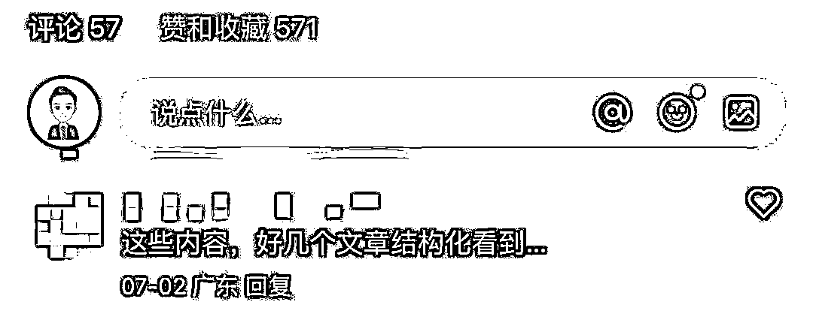
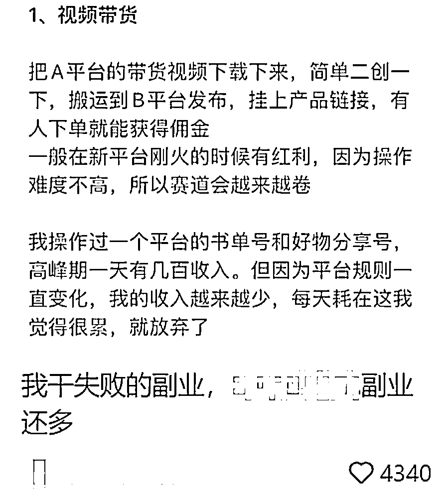
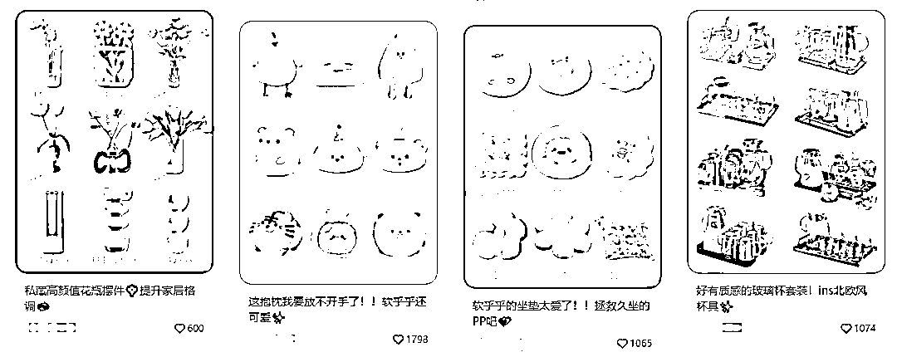
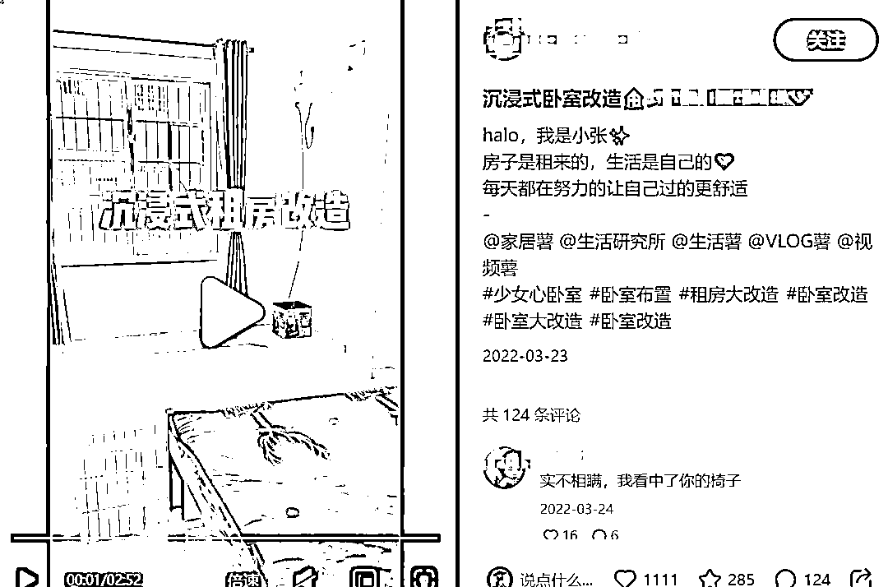
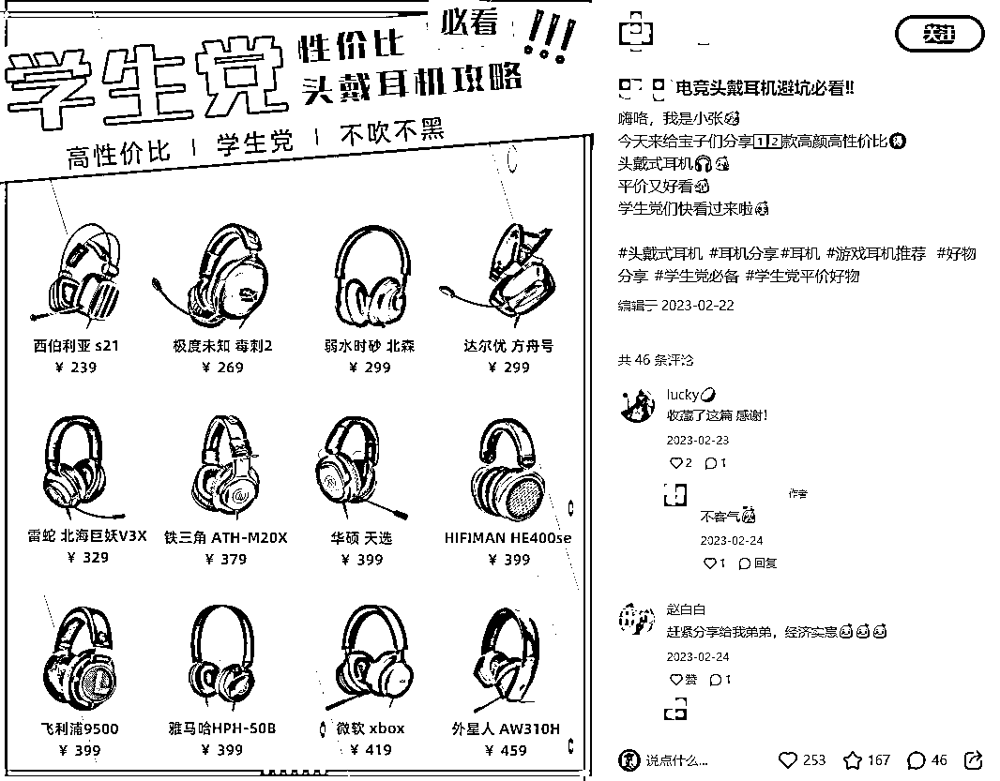
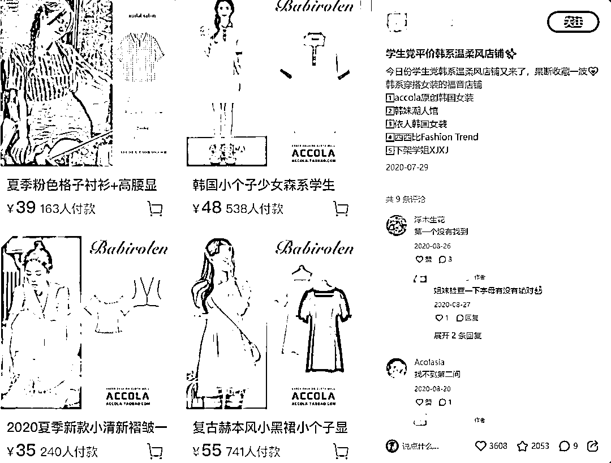
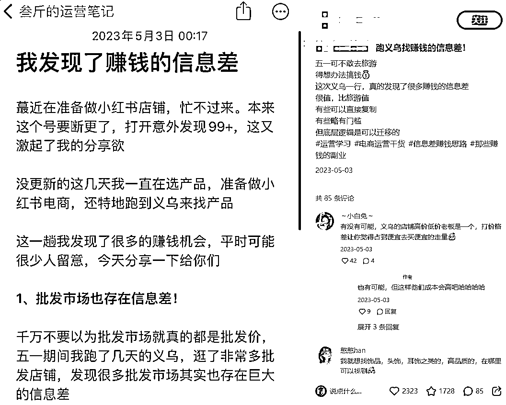

来源：https://p03a4vs9s2.feishu.cn/docx/SiFddJ9n3oU0C3xSpw6cG8hTnXe
哈喽，我是叁斤，公众号：叁斤。专注小红书赛道 4 年，运营过好物分享博主号、小红书电商、个人IP账号，大部分变现方式都做过一遍。之前分享过：
我是跨行业转型，期间踩过无数的坑，也耽误了很多时间。
今天分享下做小红书 4 年来，我踩过的 10 个大坑！对新手运营会很有帮助
每次新起一个小红书号，都会经历一次流量焦虑
笔记发布后，每隔 10 分钟就刷新一次数据，看小眼睛的增长，如果增长慢、没人点赞，就开始慌了
是不是违规了？是不是限流了？话题不吸引人？……
我比你们还焦虑，我了解平台规则、熟悉算法、还做过这么多爆文，要是新号不能起号成功，那多丢人？
但我发现，这就是无意义内耗。我需要纠结的不是笔记数据，而是下一条笔记怎么才能做得更好？
“控制变量起号法”，就是在这个阶段中尝试出来的
每做一条笔记，我都会控制自己不看数据，去做别的事情。24小时后，再看数据，根据数据反馈，去调整下一条笔记
比如我可能会换封面、换标题重发等等
新手最常犯的错误就是流量焦虑，可以尝试改掉，笔记发布后，马上关闭小红书，去做别的事，忘记你曾经发过笔记
这个是我做过无数次心理斗争的大坑！一开始运营小红书的时候，我是坚持原创的，我认为抄爆款做不出真正好的笔记
但看很多人都在教抄爆款，而且我创造出来的爆款也被别人抄，所以我想，别人都抄，为什么我不可以？
于是我也开始抄爆款，确实，出爆款的概率大了很多。但转化率上不来，空有点赞没关注
当时我的内容水平不咋好，抄爆款做内容，运营水平更是提升不了一点，IP 也做不起来，抄了 1 个月左右就放弃了
耽误了一个月的成长时间
近期我看到之前一个笔记突然来了一个评论，说相似的内容在很多笔记上都看到了……

我一时语塞……
还好后来没有再抄爆款了
抄爆款确实很容易起号，但如果是想长期经营小红书，要打造个人IP的话，建议放弃抄爆款
刚学习小红书时，也是通过模仿对标起号的。对标发什么选题，我就发什么选题，跟得很勤快
但是模仿对标久了，就发现整个账号好像没有我自己的东西
不知道下一个选题应该做什么，不知道某个知识点怎么结合到自己的故事，也不知道怎么把对标的笔记变成自己的纯原创
久而久之，这就成了个没有人设的账号。涨粉困难，也变现不了。
后面直接放弃了对标
完全从自己个人重新定位，讲自己的故事，反而更容易出爆款了
比如这个笔记，我不写有几个赚钱的副业，而是把我做失败过的副业都讲一遍，反而成了小爆文

对标确实也很容易起号，跟抄爆款一样，如果你想做一个完完全全属于自己的账号，想让追随你自己，建议不要模仿对标
我后来再没模仿过对标，但没停止分析、拆解对标，为的不是模仿，而是从他们身上找到某一个值得学习的地方，然后超越他们
在运营小红书的初期，我账号经历过多次转型。其中一次转型，是做了家居类账号
我分析家居类账号接广告容易，而且费用也比较高，于是去做了，也不算失败，涨到了几千个粉丝
但是，账号并没有给我带来多少收入
原因如下：
笔记里出现的物品比较廉价，高价值的产品拍不出高级感……于是导致账号调性很差，接不到高价值的广告
后来被迫放弃，去做了别的赛道
新手做账号时，要结合自己实际情况去选择，千万不要看别人做什么赚钱就去做
每个赛道都能赚钱，别人能赚的，你不一定能赚
自己尝试过才发现，那些家居博主赚钱我是一点也不眼红，真没那么容易
在我运营小红书初期，起了很多账号，都是原创。但模板是一致的，导致内容同质化非常严重
内容大概长这样：

账号没有人设，只有一堆产品贴图。笔记可以轻松复制，粉丝看我和看别人没什么区别，导致粘性很差
而且因为内容同质化很严重，品牌方在投放时也不会给太多钱
后来转型做个人 IP 后，输出带人设的内容，即使我用的是备忘录截图，也依然会有粉丝追随，催更
新手做小红书，一定要做带人设的个人IP账号，无人设的账号，粉丝粘性都会比较弱，看谁都一样
在转型做家居博主的时候，看人做租房改造很火，于是做了个租房改造账号

变现不是很理想，又看到别人发图文测评类的很容易接广告，于是也发了……

后来这个账号变成了大杂烩，什么都有，数据烂的不行，直接放弃了
做个人IP时，我也换过几次定位
最初想做副业类定位，副业测评、项目分享。但发现自己并不喜欢这个定位，做过的副业有限，也没有更多心思去发掘新项目，导致账号断更很长一段时间
新手做账号，找到适合自己的定位后，不要频繁切换。
你做一个笔记，准备什么东西？
我很早就想做小红书了，但不会写文案、不会拍摄、不懂运营，想学会运营、写文案和拍摄后，再开始做小红书
这是大多数人的通病，也是我做小红书前遇到的问题。结果是我一直没学会运营，也没学会写文案，账号也没开始运营
直到我看到这样的笔记：

图片是淘宝店铺截图，文案只是把店铺名字列了一遍，就这么简单，也能赚钱，也能火。我就明白，我迟迟没有运营小红书，不是因为不会，而是懒
现在依然有很多人在运营小红书前，会考虑：
没有人的账号是做好了所有准备才做起来的，即使 mcn 机构孵化达人，也是先开始测试，有反馈再补充设备
所有做自媒体的人，没有哪一刻是完全做好准备的，都是在运营的过程中不断升级、完善，才能把账号越做越好
做好准备在开始，就等于永远都不会开始
做个人 IP 账号时，我分享的是自媒体运营相关的干货，经常会陷入一个误区：从教育者的角度分享“你应该怎么做”
结果这些笔记的数据都烂的不行
用户刷小红书，是来娱乐、消遣的，没人希望刷个小红书还被教育
而且这些我认为的“痛点”，也许并不是真的痛点。只是我认为“你应该要学会”
后来我把分享方式改了，我把“你应该怎么做”，改为“我是这么做的”，数据会好很多
比如，分享我在义乌见到，别人是怎么通过信息差赚钱的……

所谓自嗨内容，就是那些看起来文字华丽，但全篇以自我表达为中心，缺乏用户导向的内容
自媒体新手很容易把文案写的自嗨，比如：
刚运营小红书时，我老板发给我一个“运营秘籍”之类的东西，里面说，注册账号要关闭WiFi、用微博注册、要日更……
我一直奉为真理，不管有多少事情，都保证账号能日更
但后来我发现，当我很忙，没时间做笔记时，如果随便做一条去发，那这条笔记大概率不会有水花
每次都这样，我也越来越怀疑日更的必要性
有一次实在没时间做，就不更了。忙了一周再更新账号，发现数据正常，断更一周没有任何副作用
从那时开始，我不再把日更当作运营指标。后面带团队时，也没有要求团队必须日更
一切以单篇内容质量为准，如果一个笔记质量我认为不行，就不发，哪怕断更也不发
现在的我运营账号也一样，当我没有很好的思路时，就放着不更
比起日更，更重要的是单篇笔记的质量
之前做过一个美食账号，涨到三万多粉丝，只赚到300块钱广告费
当时没想别的，只知道要通过广告赚钱，什么火就发什么，结果笔记火了，粉丝涨起来了，但没商家找……
后来复盘发现原因，吸引的人群都是小18岁的，没什么广告价值。加上内容里的广告位也不多，没有种草属性，就没品牌方找
之后做的每一个账号，都把运营顺序改了
新手做自媒体，应该先确定自己的目标，有目标去做账号，变现效率会高很多，不至于做了几万粉还赚不到钱
/
好了，以上就是踩过的10个大坑，还有无数的小坑。我发现我跨行转型自媒体，是一路踩坑走过来的
希望你们看完后，能少走些弯路